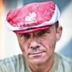

Что говорят наши покупатели
Зинаида, Харьков
Сплошная радость: с детьми гуляет, ковры выбивает, огород удобряет, в жару обдувает ушами.

Семен из Днепра
Я в работе использую несколько мощных рабочих слонов. Они роют ямы, переносят шпалы. С помощью слонов я смог полностью отказаться от использования детского и женского труда.

Михаил Попов
Я своего вывозил на выходные на дачу, так он объел всю соседскую малину. Раньше сосед возмущался бы, а сейчас - ничего, улыбнулся и ушел. Кстати, до сих пор улыбается.
Алла, Киев
Лучше всего заниматься бегом со слоном. Ни велосипедисты, ни автомобилисты не мешают - лежат тихонько в кюветах и желают тебе новых спортивных успехов.

Степа, Житомир
Начал ездить на слоне на работу, при нынешних цена на бензин - просто находка. Небыстро, бывает опаздываю, но начальник не против, я паркую своего Дамбика рядом с его бэхой :)